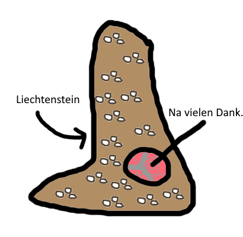

Ähnlich dem Saarland sind flächenmäßig noch kleinere Gebiete dazu verdammt medial als Größeneinheit missbraucht zu werden.
Eines dieser Gebiete, Liechtenstein, wird heute als volkswirtschaftlicher Referenzpunkt dienen.
Vor ein paar Wochen kam mir eine grandiose Idee, man könne doch einfach verschiedene wirtschaftliche Phänomene und Gegebenheiten auf eine kleinere Fläche projezieren. In diesem Beispiel geht es obsessiv um Liechtenstein, ich entschuldige mich an dieser Stelle bei allen 4 Liechtensteinern die diesen Beitrag in den nächsten 20 Jahren lesen werden.
Die Landwirtschaft ist ein essentielles Standbein des menschlichen Lebens, ohne Landwirtschaft und die daraus resultierende Nahrung geht nichts, aber auch wirklich gar nichts. Im Durchschnitt benötige ich etwa 2.500 kcal. Laut dem Statitischen Bundesamt betrug die Kartoffelproduktion pro Hektar im Jahr 2025 459,6 Dezitonnen. Laut Plantura Garden haben 100 gramm Kartoffeln 71,0 kcal.
459,6 Dezitonnen Kartoffeln = 45.960 kg Kartoffeln = 459.600 100 gramm Einheiten Kartoffeln; 459.600 x 71 kcal = 32.631.600 kcal / 2500 = 13.052,6 Ich-Tage; 13.052.6 / 365(wir ignorieren Schaltjahre) = 35,760 => 36 Ich-Jahre oder 36 mal mich.
Davon ausgehend, dass diese Rechnung korrekt ist, kann also 1 Hektar feinstes Liechtensteiner Ackerland mich 36-mal ernähren. Dass diese sehr schlimme Mangelernhährung innerhalb weniger Wochen zu schwersten Mangelerscheinungen führen würde lassen wir an dieser Stelle außer Acht.
Laut Wikipedia hat Liechtenstein 160,5 km² Grundfläche. Nehmen wir einfach mal an wir könnten diese Fläche zu 95% für eine schöne Kartoffelmonokultur nutzen, dann hätten wir (160,5 x 0,95 x 100) 15.247,5 Hektar feinstes Ackerland.

15.248 kaufmännisch gerundete Agrarhektar x 36 Ichs (eine definitiv valide Einheit) = 548.928 Ichs. Wir sehen also die Liechtensteinische Landwirtschaft ist laut diesem Modell extrem ineffizient.
Daraus schließe ich, man könnte mich etwa 550.000 mal (tatsächliche Einwohner: 40.032 Faktor 13,7 !) in Liechtenstein vorkommen lassen, WENN ich nichts weiter als Kartoffeln zu mir nehme und man irgendwie die Liechtensteinische Regierung von diesem waghalsigen Vorhaben überzeugen könnte.
Zurück zum Archiv